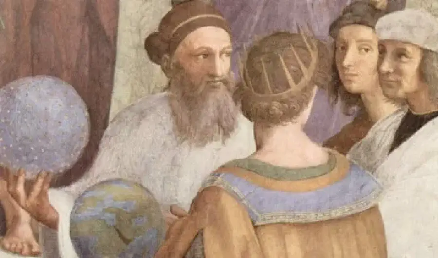
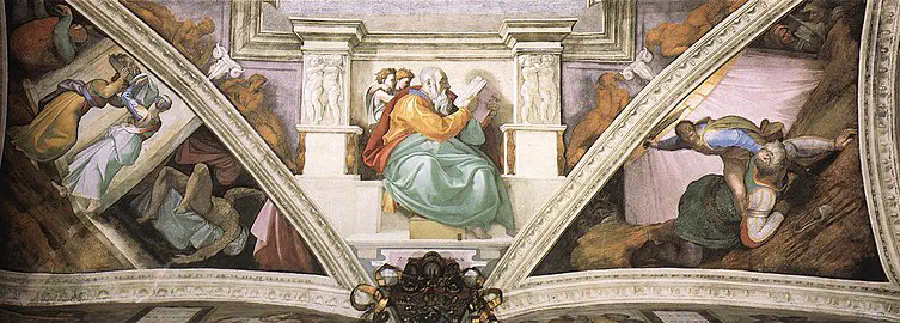
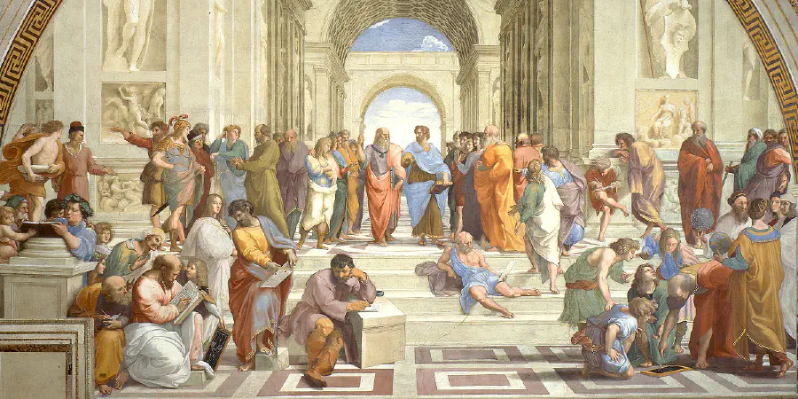

Renaissance Pranks and Protest
Aimee Kuiper, Freelancer
April 16, 2024
Knock Knock
Who’s there?
The pope, and I don’t like what you painted in my Sistine Chapel, Michelangelo.
Those who remember their art history know that the great Renaissance sculptor, Michelangelo, was reluctant to paint the Sistine Chapel. What they might not remember is that this complicated story between Mike and Pope Julius II resulted in the Renaissance’s greatest prank. Although the details of the joke are hard for modern viewers to notice, the commissioned artist slipped boldfaced insults right in under (or rather, far above) his Pope’s nose. In the fresco of biblical figure Zechariah, which was placed directly above where the Pope traditionally sits in the chapel, we can see Mike’s painted angel’s “giving the fig,” a common gesture of the time, equivalent to a middle finger. Michelangelo’s detailed religious education made it possible for him to add many more ornery details, such as God’s exposed bum and feet, or symbols of Jewish heritage that opposed Rome’s attitude toward the Jewish people.
 {kind=link}
{kind=link}
To be fair, the church leader had once commissioned a monumental sculpture project from Michelangelo, but rescinded the offer AFTER Mike had paid for the stone and dragged it to Rome. Slights like this happened as often in 16th century Italy as they do in the modern world, but when powerful figures did them wrong, Renaissance artists working on patronage needed a subtle way to get back at the kings, landowners, and religious authorities who snubbed them.
We find these “gotcha” details in the work of several well-known names. Albrecht Durer, a German artist known for his Northern Renaissance-era printmaking, frequently snuck tiny messages and metaphors into his work. Recently, art collectors were drawn to the word ‘Noricas’ hidden in the neckline of a dress in one of Durer’s prints. German viewers in his time would have immediately recognized it as a garment that violated city law (because the neckline was too low), making it a protest of Nuremberg’s strict dress rules for women at the time (MPR News).

In the most widespread prank of all, artists at this time often painted their own likeness in the background of paintings for wealthy patrons. In a corner of The School of Athens, we see young Raphael’s face surrounded by mathematicians and philosophers. These mini-portraits reflected the individualistic ideology of the time and were a far more personal form of a signature for these creators.
{kind=link}
{kind=link}
Details that flout traditional and political structures of Renaissance-era Europe were a form of self-expression for artists who lived in a time that increasingly valued the individual rather than the family name, guild, or city or origin. More than a bid for attention however, these subtle details were one of the only methods of resistance for artists who were not free to address controversial issues directly.